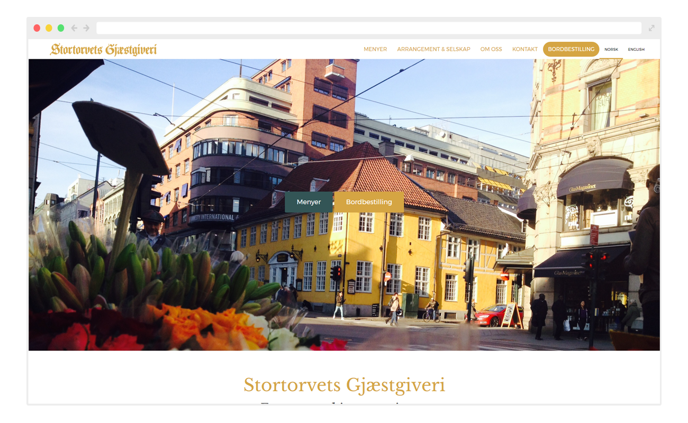

Stortorvets Gjæstgiveri - Webbsida i Wordpress.
En av Oslos äldsta restauranger, Stortorvets Gjæstgiveri, ville uppdatera sin webbsida så att den speglade deras nya meny som är en modern variant av traditionell norsk mat. De ville ha ett lättare färgschema än deras gamla sida och att den ska vara tillgänglig på norska och engelska. Sidan är byggd i Wordpress med ett skräddarsytt tema.
- År: 2015–2016
- Roll: Designer & Utvecklare
- www.stortorvets-gjestgiveri.no
Startsida
